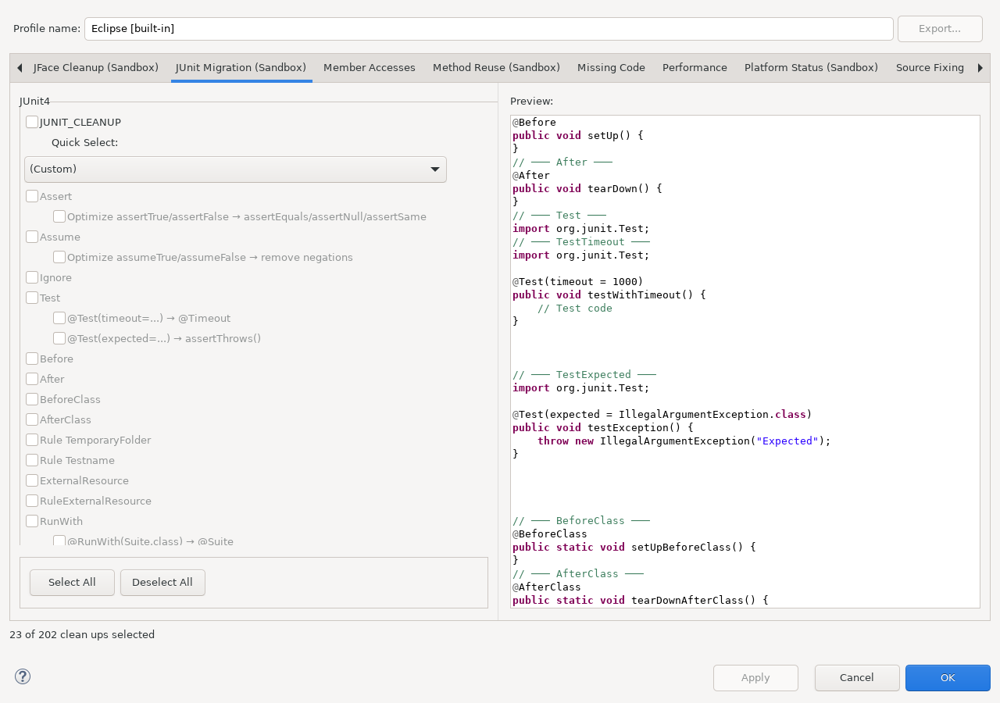

Migrates supported JUnit 3 and JUnit 4 test code to JUnit Jupiter.
This documentation is installed by sandbox_junit_cleanup_feature
together with the runtime plug-in. The runtime plug-in does not depend on this Help bundle.
Open Java > Code Style > Clean Up, edit a cleanup profile, and select JUnit Migration (Sandbox).

Continue with Using this feature and Reference, safety, and limitations.